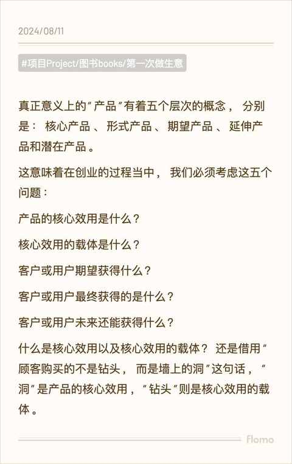
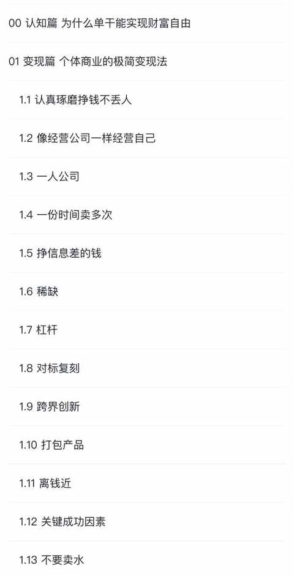
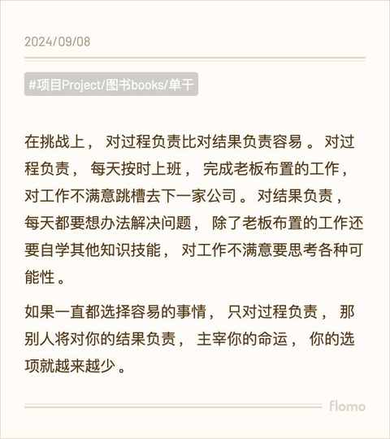

踩过坑才明白商业常识的价值，这 3 本书让你少走弯路
约斯特普通
2024-09-14
日常工作和生活中，总有一些道理只有踩过坑之后才能懂。
由于商业常识的缺失，往往在商业方面踩过坑之后，并不能彻底明白其中的道理，而且会错误归因和复盘，最终得到一个看起来合理但并不符合商业常识的结论，进而在下次实践中继续犯同样的错误，循环往复。
一、要创业吗？
《第一次做生意 》能给到你一些答案
作者是外贸公司老板，公众号（丹牛）主理人，多年经营公司和写文章的经验让这本书读起来很是流畅，能感受到作者是真的很想你能懂得这些道理，说的都是人话。

二、可以试试一人公司吗？
《单干 》能告诉你需要哪些技能
一人公司是最近几年被提及到比较多的概念，日常听到看到的最接近一人公司的业务就是自媒体咯，做自媒体不只是把内容做好就能赚钱，还需要商业方面的知识和技能。


三、如何建立商业认知？
先读读这些书《影响商业的 50 本书 》
想象一个场景，吴晓波老师在你旁边和你说哪本书要怎么读，你能快速决定这本书是否要读，要怎么读。